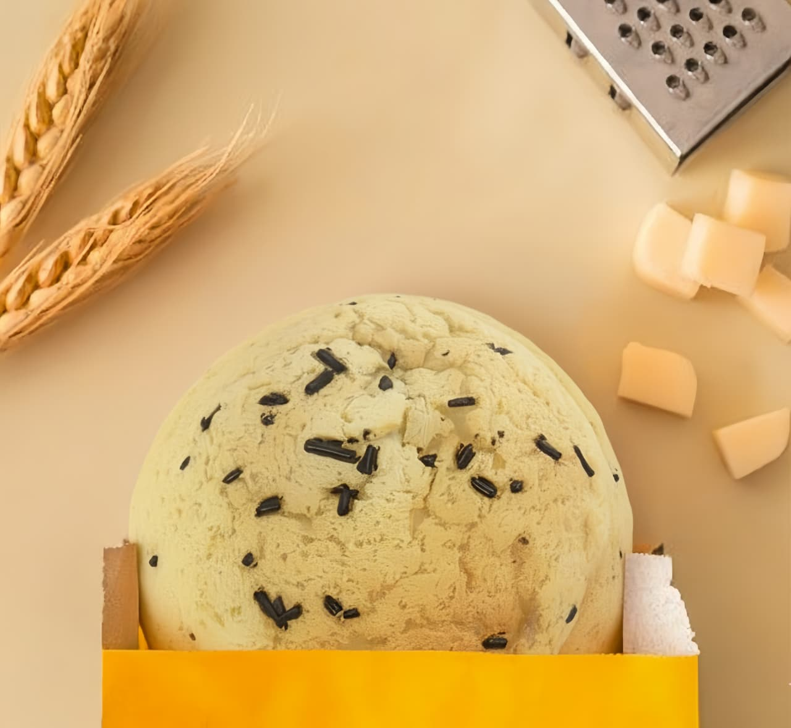

merupakan unit usaha edukatif yang menyajikan roti dan kopi hasil produksi langsung dari mahasiswa


TEFA Bakery & Coffee adalah sebuah fasilitas produksi sekaligus tempat praktik bagi mahasiswa yang dikelola oleh Politeknik Negeri Jember. Didirikan pada tahun 2017, TEFA merupakan hasil pengembangan dari unit pembuatan roti yang sudah ada sejak 2008. Sebagai bagian dari Unit Pelayanan Akademik (UPA), TEFA memiliki peran dalam penelitian, pengolahan, dan pengemasan produk makanan yang berkualitas. Dengan mengedepankan prinsip SIP (Smart Inovatif Profesional), TEFA Coffee and Bakery berkomitmen untuk menghasilkan produk yang memenuhi standar industri serta menjadi media pembelajaran yang nyata bagi mahasiswa.
Lingkungan Panji, Tegalgede, Sumbersari, Jember, Jawa Timur